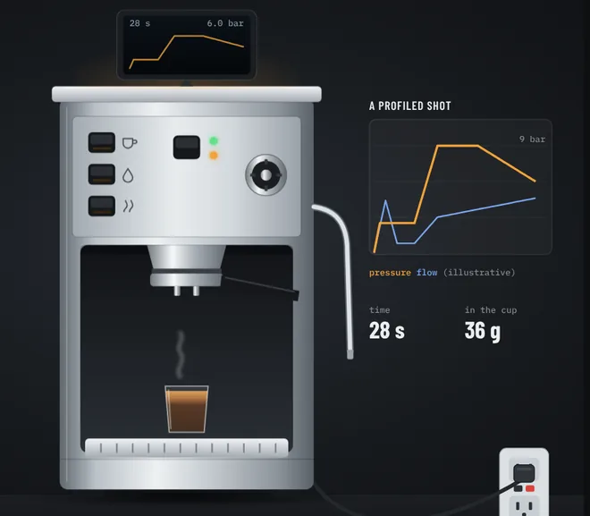

Gaggiuino is documented for the Gaggia Classic. The Silvia works, but the Silvia-specific knowledge is scattered across Discord threads. These pages pull it into tools you can use at the bench, in the order a build uses them.
Everything here is community material for the single-boiler Silvia (not the Pro or Pro X), assembled from the Gaggiuino Discord and the official docs, and not reviewed by the Gaggiuino project. There is no official Silvia schematic. The wiring is redrawn from realNiche's community diagram, so check it against his original and the official custom wiring guide before you crimp anything. Mains can kill you: cord out for every step until the checks pass.

Scroll through the whole build as an animation, from a stock Silvia to a profiled shot. Each step links to the page that covers it.
Watch the conversionAn x-ray of the stock machine you can run through heat, brew, hot water and steam, every part explained, and a live circuit you can switch.
What the PCB, sensors and SSR take over, how they hold the temperature and drive the pump, and the optional scales, tank sensor and LEDs.
133 acronyms and shop words used across the site, each with a plain definition and links to where it comes up.
Toggle new or used machine, Bluetooth or hardware scales, ToF and the LED mod, and see the total. Enter real quotes as you get them.
2What to look at and ask about at a seller's house, saved per listing, with a price gauge and what the build adds on top.
3Tell V1 to V6 apart, and E from M, with what each one changes for the build. Set yours once and every page follows.
4Every line of the Silvia BOM with links, status, price paid and box contents.
Eight phases of tickable steps, from photos of the stock machine to calibration, with a stop before first power-on. Prints as one checklist.
6realNiche's diagram redrawn with an ID on every run, its ends, wire gauge, connectors and starting length. Tap a run to isolate it.
7Wire to buy by gauge and color, the connectors to crimp, and every run to cut, with your own extra length. Tick runs off as you cut.
8Printable flag labels for each end of each run, as a PDF for Letter or A4.
955 unplugged checks. Enter the meter reading and each one marks itself pass or fail; the page says when you're ready to plug in. Prints with blanks for readings.
Pick your version, model and mains voltage. The runbook, checks, wiring and troubleshooting pages then show only what applies to your machine. Until you do, every note shows, tagged with the machines it's for.
There is no Silvia kit. Buy the PCB v4 and the 4.3" screen from an approved supplier (DIY-EFI or Gaggiuino.co), or from Peak Coffee, which Discord has OK'd and which ships to the US with tax included, and source the rest from the official BOM. Only the STM32 section of the BOM applies, not the Gaggia plumbing parts.
The stock wiring isn't integrated; the harness is rebuilt from realNiche's diagram. The DPST power switch stays on mains and breaks both line and neutral. The brew, steam and hot water switches move to low voltage.
The thermostats are clamped to the boiler with M3 screws, and the thermocouple screws into one of those holes: M3, not the M4 in the official BOM. GaggiMate's Silvia guide suggests the middle or left-most hole. Thermal paste, finger tight, lead free to rotate.
Gaggias trigger hot water with brew plus steam. The Silvia's dedicated switch goes to B15, which the public STM32 firmware reads as the water switch; not yet confirmed on Gen 3 firmware. Keep it low voltage; never leave the stock mains hot water wiring in place.
No tap block fits. Builders put the transducer on a 1/8" tee at the OPV through a 1/4"F to 1/8"M elbow, sealed with Loctite 55 on the tapered threads. The transducer seals on a flat 11 × 6 mm O-ring pressed flush into the elbow, not on its thread. Some builds use the 3-way valve's bottom port instead (Talon's does). Both work; the OPV tee has an exact parts list.
DreamSteam off (the official manual says so for the Silvia), Brew Delta off, Offset 5, HPWR 100, Main Divider 5, Brew Divider 3 as starting values from the Discord thread. Max steam 150 °C: the steam thermostat is off the heater line whether or not it stays in the boiler.
The Gen 3 screen housing with the funnel mount has been used on a Silvia; it needs a longer screen cable than a Gaggia front mount. The Printables "Silvia Nextion" enclosures are Gen 2 only.
Hardware scales use 1 kg cells on Joscha's "beefy" mount (Printables 1277828). The tank is deeper (~200 mm) and covered, so ToF-only with ranges set in the ToFnLED settings. The switch lamps go dark on low voltage; the LED mod brings them back.
| Setting | Start at | Where |
|---|---|---|
| DreamSteam | Off | Settings, Boiler |
| Brew Delta | Off | Settings, Boiler |
| Temperature Offset | 5 | Settings, Boiler |
| HPWR | 100 | Boiler, Advanced |
| Main Divider | 5 | Boiler, Advanced |
| Brew Divider | 3 | Boiler, Advanced |
Community starting values, not official defaults. Tune the offset only against a real group-head measurement.